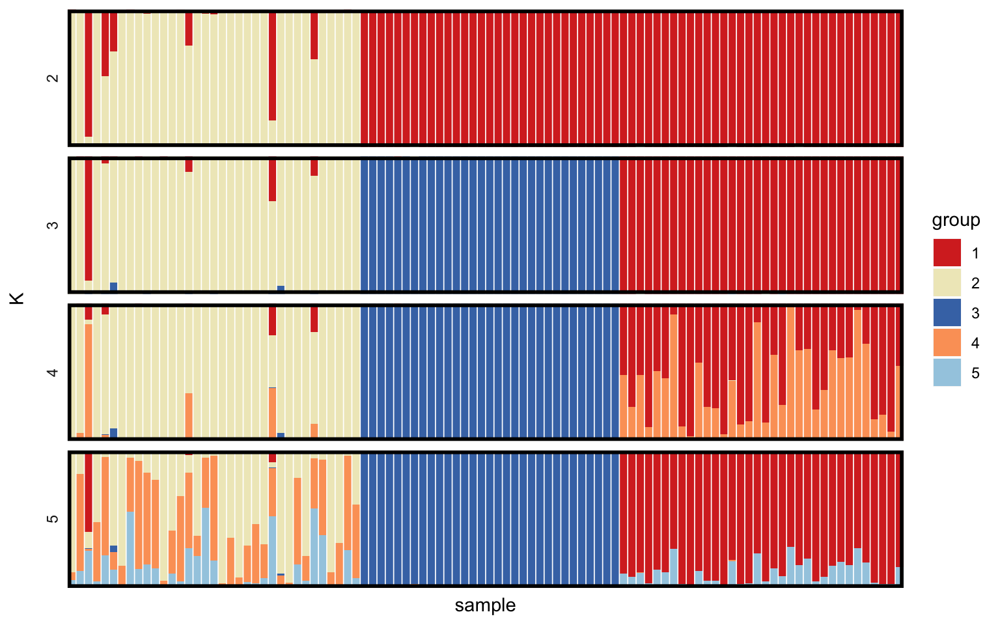

Tutorial: bi-allelic data
Bob Verity
2018-09-14
tutorial-biallelic.RmdThis vignette demonstrates the complete MALECOT analysis pipeline, including:
- importing data
- running the main MCMC
- diagnosing good and bad MCMC behaviour
- comparing different models
- producing basic outputs.
Simulate some data
MALECOT comes with built-in functions for simulating data from different models. The models used in simulation are exactly the same as the models used in the inference step, allowing us to test the power of the program without worrying about discrepancies between the data and the assumed model. We will simulate a data set of 100 samples, each genotyped at 20 bi-allelic loci and originating from 3 distinct subpopulations. We will assume that the mean complexity of infection (COI) in these subpopulation varies from 1 to 3:
mysim <- sim_data(n = 100, data_format = "biallelic", L = 24, K = 3, COI_mean = c(3,2,1))Running names(mysim) we can see that the simulated data contains several elements:
names(mysim)## [1] "data" "n" "L" "true_group" "true_m"
## [6] "true_p" "call"The raw data is stored in the “data” element. In addition, we have a record of the allele frequencies (p), the complexity of infection (m) and the grouping that were used in generating these data. These additional records can be useful in ground-truthing our estimated values later on, but are not actually used by the program - all that is needed for MALECOT analysis is the “data” element.
Data must be in dataframe format - when using real data, functions such as read.csv() and read.table() can be used to import data. Running head(mysim$data) we can see the general data format required by MALECOT:
head(mysim$data)## sample_ID pop locus1 locus2 locus3 locus4 locus5 locus6 locus7 locus8
## 1 samp001 1 1.0 0.0 0.0 0.0 1.0 0.0 0.0 0.0
## 2 samp002 1 0.0 0.5 0.0 0.5 0.0 0.5 1.0 0.5
## 3 samp003 1 0.5 0.0 0.5 0.0 0.0 1.0 0.5 0.0
## 4 samp004 1 0.5 0.5 0.5 0.5 0.0 1.0 0.0 0.0
## 5 samp005 1 0.5 1.0 1.0 0.5 0.5 0.5 0.5 0.5
## 6 samp006 1 0.0 0.5 1.0 0.5 0.0 1.0 0.0 0.5
## locus9 locus10 locus11 locus12 locus13 locus14 locus15 locus16 locus17
## 1 1 1 0.0 1.0 1.0 0 0.0 1 0.0
## 2 0 1 1.0 1.0 1.0 0 0.5 1 0.5
## 3 0 1 0.5 0.5 1.0 0 1.0 1 0.0
## 4 0 1 1.0 1.0 0.5 0 1.0 1 0.0
## 5 0 1 1.0 0.5 0.5 0 0.5 1 0.0
## 6 0 1 0.5 1.0 0.5 0 0.5 1 0.0
## locus18 locus19 locus20 locus21 locus22 locus23 locus24
## 1 0.0 1.0 0 0.0 0.0 1.0 1
## 2 0.0 0.5 0 0.5 0.0 1.0 1
## 3 0.0 0.5 0 1.0 0.5 0.5 1
## 4 0.5 1.0 0 0.5 0.5 1.0 1
## 5 0.5 0.5 0 1.0 0.0 0.5 1
## 6 0.5 1.0 0 1.0 0.5 0.5 1Note that this is the required format for bi-allelic data only - for multi-allelic data see this vignette.
Samples are in rows and loci are in columns. There are also several meta-data columns, including the sample ID and the population of origin. These meta-data columns are optional and can be turned on or off when loading the data into a project.
The actual genetic data must be one of the following values
- 1 = homozygote for the reference allele
- 0 = homozygote for the alternative allele
- 0.5 = heterozygote
- -9 = missing data (the value used can be specified, but -9 is the default)
Note that MALECOT currently does not use within-sample allele frequency information other than in terms of the major homozygote/heterozygote call, therefore intermediate values should be converted to one of the above options. MALECOT does, however, include error terms to allow for misclassification of homozygote/heterozygote calls.
Create a project and read in data
MALCOT works with projects, which are essentially just simple lists containing all the inputs and outputs of a given analysis. We start by creating a project and loading in our data:
myproj <- malecot_project()
myproj <- bind_data_biallelic(myproj, mysim$data, ID_col = 1, pop_col = 2)Notice the general format of the bind_data() function, which takes the same project as both input and output. This is the format that most MALECOT functions will take, as it allows a function to modify the project before overwriting the original version. In the input arguments we have also specified which columns are meta-data, and all other columns are assumed to contain genetic data.
We can view the project to check that the data have been loaded in correctly:
myproj## DATA:
## data format = biallelic
## samples = 100
## loci = 24
## pops = 3
## missing data = 0 of 2400 gene copies (0%)
##
## PARAMETER SETS:
## (none defined)If there have been mistakes in reading in the data, for example if meta-data columns have not been specified and so have been interpreted as genetic data (a common mistake) then this should be visible at this stage.
Define parameters and run basic MCMC
We can define different models by using different parameter sets. Our first parameter set will represent a simple model in which any COI between 1 and COI_max is equally likely a priori, and in which there is zero error in genotype calls:
myproj <- new_set(myproj, name = "uniform model", COI_model = "uniform",
COI_max = 20, estimate_error = FALSE, e1 = 0, e2 = 0)Producing a summary of the project we can now see additional properties, including the current active set and the parameters of this set.
myproj## DATA:
## data format = biallelic
## samples = 100
## loci = 24
## pops = 3
## missing data = 0 of 2400 gene copies (0%)
##
## PARAMETER SETS:
## * SET1: uniform model
##
## ACTIVE SET: SET1
## lambda = 1
## COI model = uniform
## COI max = 20
## estimate COI mean = TRUE
## COI dispersion = 2
## estimate error = FALSE
## e1 = 0
## e2 = 0Now we are ready to run a basic MCMC. We will start by exploring values of K from 1 to 5, using 1000 burn-in iterations and 1000 sampling iterations. By default the MCMC has auto_converge turned on, meaning it will test for convergence every convergence_test iterations and will exit if convergence is reached (convergence_test = burnin/10 by default). Hence, it is generally a good idea to set burnin to be higher than expected, as the MCMC will adjust this number down if needed. The number of sampling iterations can also be tuned. Our aim when choosing the number of sampling iterations should be to obtain enough samples that our posterior estimates are accurate to an acceptable tolerance level, but not so many that we waste time running the MCMC for long periods past this point. We will look into this parameter again once the MCMC has completed. The most unfamiliar parameter for most users will be the number of “rungs”. MALECOT runs multiple MCMC chains simultaneously, each at a different rung on a “temperature ladder”. The cold chain is our ordinary MCMC chain, and the hot chains serve two purposes: 1) they improve MCMC mixing, 2) they are central to the GTI method of estimating the evidence for different models. Finally, for the sake of this document we will run with pb_markdown = TRUE to avoid printing large amounts of output, but you should run without this argument.
myproj <- run_mcmc(myproj, K = 1:5, burnin = 1e4, converge_test = 1e2, samples = 1e3,
rungs = 10, pb_markdown = TRUE)## Running MCMC for K = 1
## Burn-in phase
##
|
|=================================================================| 100%
## converged within 1900 iterations
## Sampling phase
##
|
|=================================================================| 100%
## completed in 1.76111 seconds
##
## Running MCMC for K = 2
## Burn-in phase
##
|
|=================================================================| 100%
## converged within 1700 iterations
## Sampling phase
##
|
|=================================================================| 100%
## completed in 2.99292 seconds
##
## Running MCMC for K = 3
## Burn-in phase
##
|
|=================================================================| 100%
## converged within 1700 iterations
## Sampling phase
##
|
|=================================================================| 100%
## completed in 3.44192 seconds
##
## Running MCMC for K = 4
## Burn-in phase
##
|
|=================================================================| 100%
## converged within 1800 iterations
## Sampling phase
##
|
|=================================================================| 100%
## completed in 4.47019 seconds
##
## Running MCMC for K = 5
## Burn-in phase
##
|
|=================================================================| 100%
## converged within 1700 iterations
## Sampling phase
##
|
|=================================================================| 100%
## completed in 5.24515 seconds
##
## Processing results## Total run-time: 19.56 secondsIf any values of K failed to converge then we can use the same run_mcmc() function to re-run the MCMC for just a single value of K and with different parameters (for example a longer burn-in). This will overwrite the existing output for the specified value of K, but will leave all other values untouched:
Comparing values of K
The GTI method estimates the evidence for a given model by combining information across multiple temperature rungs. These rungs provide a series of point estimates that together make a “path”, and the final evidence estimate is computed from the area between this path and the zero-line. We can visualise this path using the plot_GTI_path() function:
plot_GTI_path(myproj, K = 3)
All plots produced by MALECOT are produced using ggplot, meaning they can be stored and modified later on - for example adding titles, legends etc.
In order for our evidence estimate to be unbiased it is important that the GTI path is relatively smooth. We can modify the smoothness of the path in two ways: 1) by increasing the number of rungs used in the MCMC, 2) by changing the value of GTI_pow which controls the curvature of the path (higher values lead to more steep curvature). Ideally we want a straight path, i.e. we want as little curvature as possible. In the example above we have a good number of rungs and the path is about as straight as we can get it, so there is no need to re-run the MCMC. This check should be performed on every value of K.
Once we are happy with our GTI paths we can look at our evidence estimates, first of all in log space:
plot_logevidence_K(myproj)
We can see a clear signal for K=3 or higher, and the 95% credible intervals are nice and tight. If we needed tighter credible intervals at this stage then we could re-run the MCMC (for the problem values of K only) with a larger number of samples.
We can also plot the full posterior distribution of K, which is obtained by transforming these values out of log space and normalising to sum to one:
plot_posterior_K(myproj)
This second plot is usually more straightforward to interpret, as it is in linear space and so can be understood in terms of ordinary probability. In this example we can see strong evidence for K=3, with a posterior probability of >0.99. Again, if we had seen wide credible intervals at this stage then it would have been worth repeating the MCMC with a larger number of samples, but in this case the result is clear and so there is no need.
Structure and COI plots
The main result of interest from this sort of analysis is usually the posterior allocation or “structure” plot. This plot contains one bar for each sample, with the proportion of each colour giving the posterior probability of belonging to each of the K subpopulations. We can use the plot_qmatrix() function to produce posterior allocation plots for different values of K. The divide_ind_on argument adds white lines between individuals, and can be turned off if these lines start getting in the way.
plot_qmatrix(myproj, K = 2:5, divide_ind_on = TRUE)
We can see that for K=3 (the most highly supported value of K) there is a clear split into three distinct subpopulations. The advantage of simulated data is that we can verify that this is the correct grouping by looking at mysim$true_group, although obviously this is not possible for real data.
When reporting and publishing results it is a good idea to produce posterior allocation and COI plots for a range of values of K so that the reader has the option of visualising structure at multiple levels, and ideally this should also be backed up by a plot of the model evidence to give some idea of the model fit at each level. At this stage it is worth stressing the point made by many previous authors - the model used by MALECOT and similar programs is just a cartoon of reality, and there is no strict K in the real world. Instead, each K captures a different level of population structure, and while the evidence can help guide us towards values of K that fit the data well, it is just a guide and should be taken alongside other biological considerations.
Alongside the posterior allocation plot, we can plot the posterior COI of all samples. Below we have also used the ggplot2 package to add the true (simulated) COIs to the plot in the form of red crosses.
posterior_m <- plot_m_quantiles(myproj, K = 3)
library(ggplot2)
posterior_m <- posterior_m + geom_point(aes(x = 1:100, y = mysim$true_m), col = "red", shape = 4)
posterior_m
Comparing the posterior 95% credible intervals (black) with the true COIs (red), we can see that the model has done well in some cases and poorly in others. COI estimates are most accurate when the COI is very low (1 or 2), but are highly inaccurate when COI is large. The model has also picked up the general trend in the simulated data, with the mean COI decreasing from the first subpopulation to the last, but it has systematically overestimated the COI across the board. This is down to our choice of uniform prior on COI, which allowed for any COI from 1 to 20 with equal probability a priori. In fact, the simulated data are drawn from a more realistic Poisson distribution, in which COIs tend to be clustered around the mean, and so this prior gives too much flexibility for high COIs. We can address this issue along with some other weaknesses in another model run.